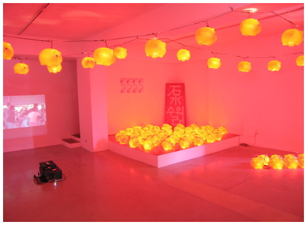
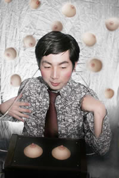

야마나카 카메라
TAP2006참가
 
특수사진가・퍼포머.
1978년 야마구치현 출생.
무라카미 타카시의 GEISAI 6에서 「은상」수상（2004）.
토우지마토우지 주재「front」소속。
자작의 사진, 영상, 노래가 융합된 독특한「카메라쇼」를 라이브형식으로 전개.
촬영행위 자체를 퍼포먼스 작품화한《나홀로합창》으로 NHK디지털스터디움、디지털아트페스티발동경（2007）에출연.
또 카메라를 사용해 만드는《카메라초밥》등의 퍼포먼스.
자작의 사진장치《가슴카메라시스텝～chibusha》를 사용한 촬영퍼포먼스.
토리데 아트 프로젝트 2006에서는 온도・마루톤을 사용한《마루톤온도》을작굑, 안무.
요코하마 뱅크아트에서는 7일간에 걸쳐 행해진『W아츠시의대운동회』（2007）를 프로듀스 하는 등 다방면에서 활동하고 있다.
2008-07-03
saptap.egloos.com 에서 옮김